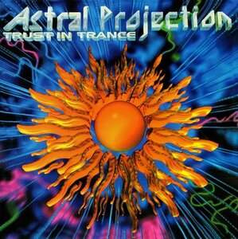
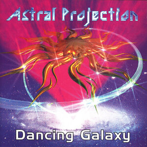
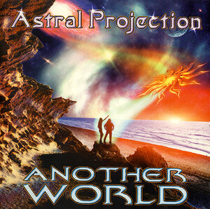
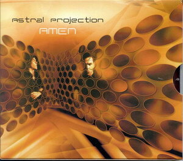

Обзор альбома Trust In Trance

Альбом 1996 года стал несомненной классикой жанра гоа–транс. В неисчислимом ряду гоа–исполнителей Astral Projection (тогда это был союз Ави Ниссима, Лиора Перлмуттера и Янива Хавива) всегда выделялись уникальным звуком и выраженным смысловым подходом к названиям своих композиций. Я всегда высоко ценил тех музыкантов, которые вкладывали в свое творчество смысл, какую-то концепцию (собственно, это и есть творчество, а не коммерческое ремесленничество). Не обязательно я могу разделять или даже просто понимать эту концепцию, но в любом случае интересно совершать путешествия по миру (мирам), читая и обдумывая эти названия.
1. Kabalah — Кабала.
A creation of a spiritual human being… Сотворение одухотворенного человеческого существа…
Это иудаистское учение о действительности, о бытии. Интересно, что есть вариант этого слова с двумя «б». Означает он то же самое, только с усилением значимости. Каббала — это развитие кабалы, переход на более высокий уровень. Подобное событие однажды произошло в иудейской истории, примерно 3,700 лет назад, с патриархом Авраамом и было зафиксировано в Пятикнижии. Когда у Аврама изменилось его восприятие мира и он стал ощущать Творящую силу (стал каббалистом), то Творец тут же развил его имя удвоением буквы «а», и он стал называться вместо Аврам – Авраам, согласно своему новому состоянию.
2. Enlightened Evolution — Просвещенная эволюция.
Сэмпл из японской анимации «Роботех» 1995 года:
We have determined that the human form is best suited to our purposes. Converging on a higher from deepest space. Enlightened Evolution. We have now taken first steps to bio-genetically transforming all of our hibernating population into humanoids. Мы определили, что человеческая форма наилучшим образом подходит для наших целей. Сходящаяся в высшей точке из глубин космоса. Просвещенная эволюция. Сейчас мы предпринимаем первые шаги по биогенетической трансформации всего нашего вялого народа в гуманоидов.
3. The Feelings — Чувства.
Сэмпл из эпизода «Новое поколение» сериала «Звездный путь»:
All these feelings that get in the way of human judgment, that confuse the hell out of us, that make us second guess ourselves — we need them to help us fill in the missing pieces because we never have all the facts. Все эти чувства, которые оказываются на пути человеческого правосудия, которые препятствуют исходящему из нас злу, которые побуждают нас повторно задумываться о себе — мы нуждаемся в том, чтобы они помогли нам собрать потерянные части, потому как мы никогда не имеем всей полноты фактов.
4.Utopia — Утопия.
Название говорит само за себя.
5. Black & White — Черное и Белое.
And the view of the Earth, which was the only… the only place of the old Universe that had any color… everything else was black and white… И вид Земли, которая была единственным… единственным местом в старой Вселенной, которое сохраняло цвет… все остальное было черным и белым…
6. People Can Fly — Люди могут летать.
«Программный» трек, если можно так выразиться. Сэмпл из криминального триллера «Калифорния» 1993 года:
When you dream… there are no rules. People can fly, anything can happen. Sometimes there’s a moment as you’re awakening when you become aware of the real world around you… but you are still dreaming. You may think you can fly, but you do better not try. People can fly! Когда ты спишь… нет никаких правил. Люди могут летать, все возможно. Иногда бывает момент, когда ты просыпаешься и начинаешь осознавать реальный мир вокруг… но ты все еще спишь. Ты думаешь, что можешь летать, но лучше тебе этого не пробовать. Люди могут летать!
7. Radial Blur — Круглая клякса.
Парадоксальное название, которое мне весьма нравится.
8. Aurora Borealis — Северное сияние.
Мой любимый трек с альбома.
9. Still Dreaming (Anything Can Happen) — Все еще во сне (Все возможно).
Ремикс на трек People Can Fly в эмбиент-стиле.
Обзор альбома Dancing Galaxy

В 2012 году исполнилось 15 лет релизу культового альбома Astral Projection — «Dancing Galaxy». Не скажу, что мое знакомство с гоа–трансом состоялось именно с этого альбома, и не с него родилось увлечение этим жанром. Но именно он — один из немногих альбомов, который спустя столь солидный срок воспринимается мной свежо и легко.
1. Dancing Galaxy — Танцующая Галактика.
The spice extends life. The spice expands consciousness. The spice is vital to space travel. Travel — without moving. Пряность раздвигает границы жизни… Пряность расширяет сознание… Пряность необходима для космических путешествий… Путешествий – без движения…
Первый трек можно назвать классическим образцом так называемого эпического транса. Не просто так он стал транс-гимном 1997 года. В качестве речевого сэмпла Ави Ниссим и Лиор Перлмуттер использовали одну из вступительных фраз фильма «Дюна» (1984 год, режиссер Дэвид Линч). Принцесса Ирулан в исполнении красотки Вирджинии Мэдсен исключительно проникновенным голосом произносит приведенные выше слова. Суть в том, что по фильму (и ставшей его основой книге Фрэнка Герберта) во Вселенной далекого будущего путешествия в космосе возможны только благодаря гильдии навигаторов. Употребляя особое вещество — меланжевый спайс («снадобье» или «пряность»), навигаторы приобретали возможность предвидеть будущее и вести корабли через свернутое пространство. Очень психоделическая идея…
2. Soundform — Звуковая форма.
Второй трек тоже содержит речевой сэмпл из «Дюны»:
Some thoughts have a certain sound, that being the equivalent to a form. Некоторые мысли имеют определенный звук, таким образом становясь эквивалентными форме…
При прослушивании этого трека мне пришла в голову фраза «The space — this is the soundform…»; при некотором роде восприятия так и есть.
3. Flying Into A Star — Полет к звезде.
В третьем треке звучит речевой сэмпл из фильма «Звездный путь» (эпизод «Новое поколение):
I’m one million kilometers from the star’s corona. I should reach it in approximately 3 minutes. I’m actually flying into a star. This is incredible. Я в миллионе километров от звездной короны. Я достигну ее примерно через 3 минуты. Я действительно лечу к звезде! Это невероятно…
4. No One Ever Dreams — Никто прежде так не грезил.
В четвертом треке снова сэмпл из «Дюны»:
A dream unfolds. So beautiful. Where are my feelings? No-one ever dreamed there were so many. Мечта разворачивается. Так прекрасно. Где мои чувства? Никто прежде так не грезил так много…
5. Cosmic Ascension — Космическое восхождение (вознесение).
Для пятого трека Астралы привлекли своего друга DJ Jorg’а (он же Йорг Кесслер из проектов Shiva Space Technology и Shiva Space Japan). Он бормочет фразу, которую я распознал далеко не сразу. Потом, когда я был уже, что называется, «в теме» оказалось, что это знаменитая мантра «Ом мани падме хум» — «О жемчужина, сияющая в цветке лотоса!». Великолепная композиция, доводящая до шаманского экстаза.
6. Life On Mars — Жизнь на Марсе.
Шестой трек весьма прост. Во время его прослушивания легко можно представить многое, в том числе и жизнь на Красной планете…
7. Liquid Sun — Жидкое Солнце.
Седьмой трек из числа моих самых любимых. Что это такое? – кровь, слезы, аяхуаска?.. кто знает?.. каждому – свое…
8. Ambient Galaxy (Disco Valley Mix)
Заканчивается альбом ремиксом на «Танцующую Галактику» в эмбиент–стиле. И снова волшебные слова принцессы Ирулан:
Пряность раздвигает границы жизни… Пряность расширяет сознание… Пряность необходима для космических путешествий… Путешествий – без движения…
Обзор альбома Another World

После ставшего культовым альбома 1997 года Dancing Galaxy израильской транс–группе Astral Projection было непросто остаться на волне успеха. Новый альбом, выпущенный в 1999 году, ничуть не понизил высочайшую репутацию этого музыкального коллектива. По-прежнему астралы сохраняют свой фирменный пульсирующий стиль, при этом создавая треки разнообразные и гармоничные. «Другой мир» стал подлинным акустическим порталом в иные измерения, вобравшим в себя спиритуальные гоа–вибрации, контакты с внеземными существами, мистические цивилизации нашей и других планет, флуктуации магнитных полей и многое другое.
1. Nilaya — Нилайя.
Мелодичный, можно сказать, небесный трек. «Нилайя» — женское имя, распространенное в Индии. Оно означает «дом», «обитель». В индийской астрологии соответствует Дому Скорпиона.
2. Another World — Другой Мир.
Великолепный трек с мощными риффами, возбуждает фантазии о всем, что находится «по ту сторону», «где-то в инопространствах». Сами музыканты предпочитают рассматривать пейзажи Другого мира на других планетах, но пространство для воображения безгранично.
3. Visions Of Nasca — Видения Наска.
Наиболее энергичный трек, раскрывающийся всем полноцветием фантастических образов. На́ска (исп. Nazca) — пустынное плато на южном побережье Перу. Также это название применяется к своеобразной археологической культуре, расцвет которой пришелся на промежуток между 300 г. до Р.Х. и 800 г. от Р.Х. Именно они создали знаменитые линии Наска, церемониальный город Кауачи и впечатляющую систему подземных акведуков, которые функционируют и по сей день. Линии Наски — группа гигантских геометрических и фигурных геоглифов на плато Наска в южной части Перу. На плато, протянувшемся более чем на 50 километров с севера на юг и на 5–7 километров с запада на восток, сегодня известно около 30 рисунков (птица, обезьяна, паук, цветы и др.); также около 13 тысяч линий и полос и около 700 геометрических фигур (прежде всего треугольников и трапеций, а также около сотни спиралей). Благодаря полупустынному климату сохранились с глубокой древности. Поскольку изображения достигают нескольких сотен метров в длину и с земли их распознать затруднительно, то официально были обнаружены лишь в современное время, при полетах над плато в первой половине XX века. Назначение геоглифов не имеет однозначного объяснения (возможно, это зашифрованный текст).
4. Searching For UFO’s — Поиск НЛО.
Трек с таинственной техно-акустикой, соответствующей загадке неопознанных летающих объектов. В треке содержится речевой сэмпл:
We’re flying along on a H22-bomber very much like this one, and we are coming south with (…) and we’re just about the same altitude (…) about 5000 feet above the ground with something (…) in the back of the airplane reported that we had bright light coming down toward the aircraft behind us. Searching for UFO’s. Мы летим рядом с бомбардировщиком H-22, почти совсем как он, и мы движемся на юг с… и мы находимся примерно на той же широте… около 5 тысяч футов над поверхностью земли, рядом с… сообщается, что в хвосте самолета виден яркий свет, нисходящий по направлению к самолету позади нас. Ищем НЛО.
Бомбардировщик H-22 — это модификация немецкого самолета Хейнкель He-111, предназначенная для запуска ракет «Фау-1» с воздуха. Имеется много описаний и рассказов пилотов времен Второй Мировой войны о том, что немецкие летательные аппараты часто появлялись в сопровождении непонятных объектов, не поддающихся идентификации.
5. Tryptomine Dream — Триптоминовая греза.
Чарующий галлюциногенный трек, под стать названию (по каким-то соображениям сознательно искажено слово Tryptamine. Большинство производных триптамина обнаруживают психоактивные энтеогенные свойства. К природным триптаминам относится встречающийся в некоторых грибах псилоцибин; к синтетическим — сильный психоделик диметилтриптамин ДМТ). Сэмпл из фильма «Звездный путь: Кинофильм» 1979 года:
I saw V’Ger’s planet. A planet populated by living machines. A conscious, living entity. Unbelievable technology. Я видел планету Ви-Джер. Планету, населенную живыми машинами. Мыслящее, живое существо. Невероятная технология.
6. Trance Dance — Транс–танец.
Ритмичный ремикс, сделанный Astral Projection на композицию группы Trilithon.
7. Mahadeva ’99 — Махадэва’99.
Вариация на тему легендарного трека самих астралов Mahadeva. Махадэва — одно из имен Шивы, означающее «Великий бог». В треке звучит шадакшара-мантра «Ом намах Шивая» (6 слогов). Хотя она и имеет прямой перевод — Поклонение Благому, — ее основное значение заключается не в словах, а в составляющих звуках, которые, в свою очередь, связываются с пятью перво-элементами (землей, водой, огнем, воздухом и эфиром) и ипостасью Шивы — Панчамукха или Панчанана ([Обладающий] Пятью ликами). «Ом» — сакральный звук, изначальная мантра. Три его составляющих (А, У, М) традиционно символизируют категории космогонии Вед и индуизма «Создание, Поддержание и Разрушение». Считается, что три звука символизируют три уровня существования — рай (сварга), землю (мартья) и подземное царство (патала). Они также символизируют три состояния сознания — грезу, сон и явь, три времени суток и три способности человека — желание, знание и действие. «На» есть сокрывающая милость Бога, «Ма» — мир, «Ши» означает Шиву, «Ва» — его милость откровения, «Йя» — душа. Пять элементов также воплощены в этой древней формуле для призывания бога. «На» — это земля, «Ма» — вода, «Ши» — огонь, «Ва» — воздух, а «Йя» — эфир, или акаша.
8. Aqua Line Spirit — Дух водной мелодии.
Лирический трек, написанный в сотрудничестве с немецким музыкантом Борисом Бленном, известным по проекту Galaxy.
9. Still On Mars — По-прежнему на Марсе.
Немного печальный (особенно поначалу) трек, являющийся продолжением композиции Life On Mars с альбома Dancing Galaxy.
Обзор альбома Amen

Альбом Amen я оцениваю как «лебединую песню» израильской группы Astral Projection — выдающихся мастеров жанра гоа–транс, чья карьера пришлась в основном на 1990–е годы. Этот альбом, выпущенный в 2002 году, вознесся в моих глазах на предельную высоту и одновременно подвел черту под творчеством Астралов. Мое мнение основано на восприятии альбома как своеобразной музыкальной космогонической композиции. Энергичный, с жесткими и временами лирическими переливами, Amen формирует в моем воображении ни больше ни меньше, как музыкально–динамическую картину сотворения и развития Мира. Начинается альбом с трека, давшего ему название. «Да будет так», как гласит библейское слово «Аминь» — с этого божественного слова берет начало история нашего мира. Далее, во втором треке, музыканты обращаются к предыстории, к изначальному состоянию мира — древнему изначальному Хаосу. Третий и четвертый треки через бесконечную (божественную) справедливость (или мудрость, как я бы еще определил) и сакральные узы ведут мир к сотворению человека. Пятый трек представляет первобытную историю человечества; шестой — эпоху технизации (наше время); седьмой — будущее спустя миллион лет. Восьмой трек обозначает преодоление границ, переход мира на порог иного уровня реальности, иного состояния. В девятом треке мир достигает Небесных Врат. Десятый трек самый загадочный — видимо, это и есть другая, новая реальность…
1. Amen — Аминь.
Цитата из речи астронавта Фрэнка Бормана, члена экипажа миссии «Аполлон–8», 24 декабря 1968 года.
Give us, O God, the vision which can see our love in the world in spite of human failure. Give us the faith, the trust, the goodness, in spite of our ignorance and weakness. Give us the knowledge that we may continue to pray with understanding hearts and show us what each one of us can do to set forward the coming of the day of universal peace. Amen. Даруй нам, Боже, зрение, которое может видеть нашу любовь в мире, несмотря на человеческие неудачи. Даруй нам веру, надежду, добро, несмотря на наше невежество и слабость. Даруй нам знание, с помощью которого мы можем продолжать молиться с понимающими сердцами, и укажи, что каждый из нас может сделать, чтобы приблизить приход дня всеобщего мира. Аминь.
2. Chaos — Хаос.
В течение трека несколько раз эхом повторяется заглавное слово.
3. Infinite Justice — Бесконечная справедливость.
4. The Nexus — Узы.
5. Sticks & Stones — Палки и камни.
6. Techno Drome — Технодром.
7. 1,000,000 Years From Today… — Миллион лет вперед…
Цитата из эпизода «Шестой палец» американского телесериала «За гранью возможного» (The Outer Limits) 1963 года:
The Power of technology. I am now where man will be, approximately one million years from today. Власть технологии. Сейчас я там, где человек будет примерно через миллион лет.
8. Anything Is Possible — Все возможно.
Цитаты из фильма «Матрица» 1999 года:
I don’t know the future. I didn’t come here to tell you how it’ going to end. Я не знаю будущего. Я пришел не для того, чтобы предсказывать, чем все кончится. It’s the only way to fly. Это единственный способ летать. I’m going to show them a world. A world without rules and controls. A world without borders or boundaries. I don’t know the future. I didn’t come here to tell you how this is going to end. I came here to tell you how it’s going to begin. A world… where anything is possible. Я покажу им мир. Мир без правил, без контроля. Мир без пределов и ограничений. Я не знаю будущего. Я пришел не для того, чтобы предсказывать, чем все кончится. Я пришел для того, чтобы сказать, как это начнется. Мир… где возможно все.
9. Heaven’s Gate — Врата Небес.
10. Electric Blue — Электрик.
В астрологии цвет Электрик связан со знаком Водолея. В физике наблюдается феномен электрического свечения соответствующего цвета, являющееся результатом спектральной эмиссии возбужденных ионизированных атомов (или возбужденных молекул) газов воздуха (в основном кислорода и азота), возвращающихся в невозбужденное состояние.